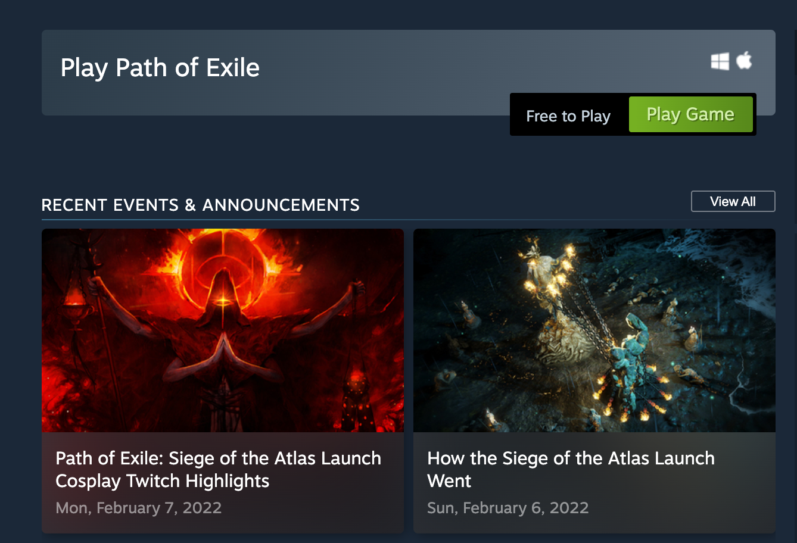
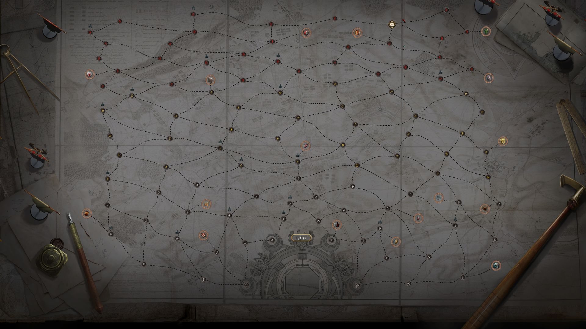

Path of Exile
Path Of Exile la última expansión Siege Of The Atlas está disponible, y parece que sin problemas. Simplifica el juego final de Atlas al mismo tiempo que lo hace más personalizable, al tiempo que agrega nuevos jefes sobrenaturales para aplastar.
Aquí tenéis el tráiler de la semana pasada:
El lanzamiento de Siege Of The Atlas parece haber ido sin contratiempos, y una de las publicaciones más votadas en la página de Reddit del juego en este momento está elogiando a Grinding Gear Games por su suavidad. Chris Wilson de GGG respondió diciendo que "se debió principalmente al arduo trabajo que nuestro equipo realizó para pulir este lanzamiento en las últimas semanas".
Path Of Exile y sus expansiones son free-to-play y se financian a través de cosméticos y expansiones de inventario. Puedes conseguirlo en Steam.
Récord máximo de jugadores simultáneos
La expansión más reciente de Path of Exile, Siege of the Atlas, permite a los jugadores construir su propio final renovando el Atlas de los mundos, que es básicamente el núcleo del juego en este punto. Siete jugadores ya han superado la expansión al derrotar a los seres divinos The Maven, The Searing Exarch y The Eater of Worlds al derrotarlos en la Liga Archnemesis Hardcore Solo Self-found, que es realmente impresionante pero probablemente sea un galimatías si no lo haces. jugar Path of Exile y nunca lo he hecho.
La última expansión de Path of Exile, Siege of the Atlas, permite a los jugadores aprovechar los ocho años completos de historia del juego mezclando y combinando niveles para jugar en Atlas of Worlds. Eso significa que todo el contenido antiguo está prácticamente desbloqueado y puedes usarlo para perseguir a los nuevos jefes y algunos antiguos. También hay una cuadrícula de habilidades masiva completamente nueva... pero en lugar de aplicar modificadores a tu personaje, aplica modificadores a tu lista de reproducción Atlas of Worlds. Ahora puedes asegurarte de que tus tipos de monstruos, botines y entornos favoritos siempre aparezcan en tu propia experiencia de juego final personalizada.
Puedes encontrar más información sobre Path of Exile: Siege of the Atlas en el sitio web oficial de Path of Exile.